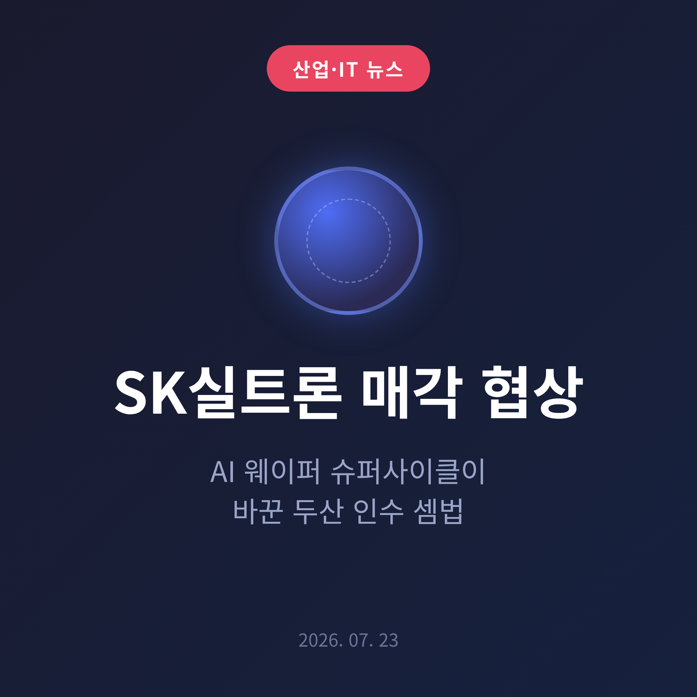
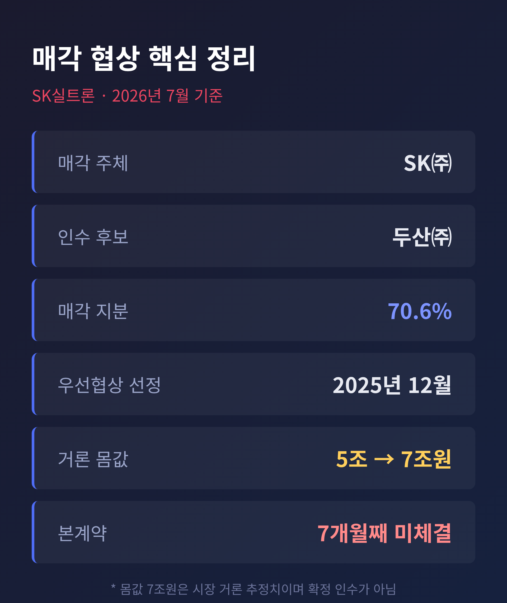
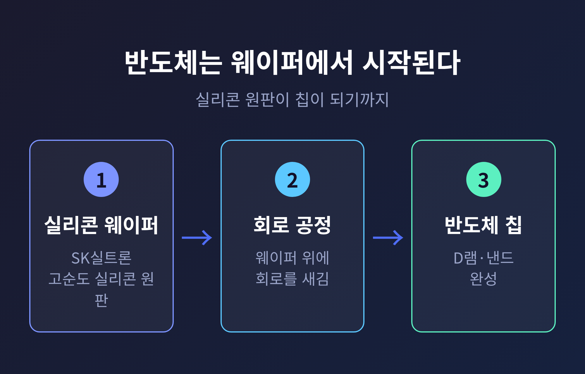
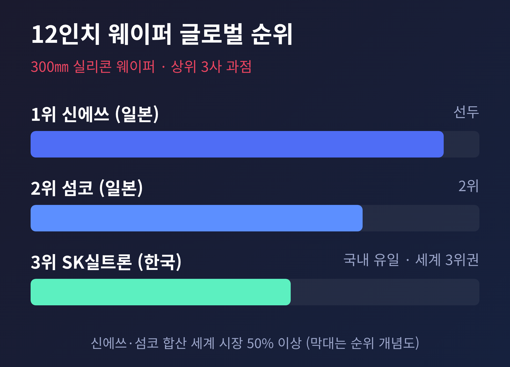
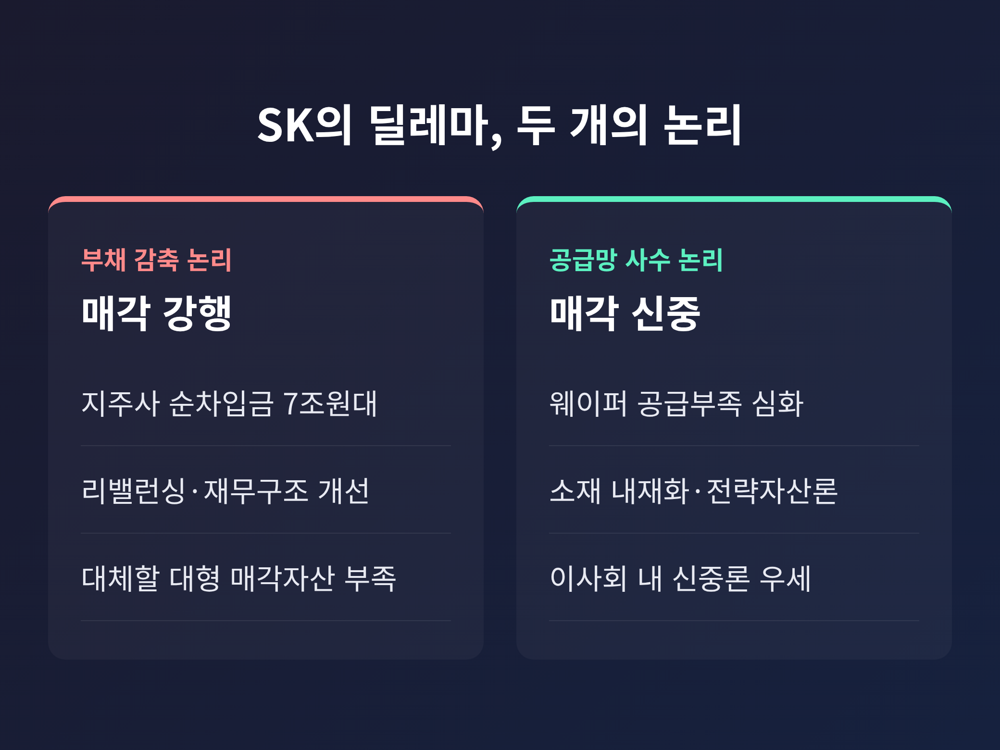
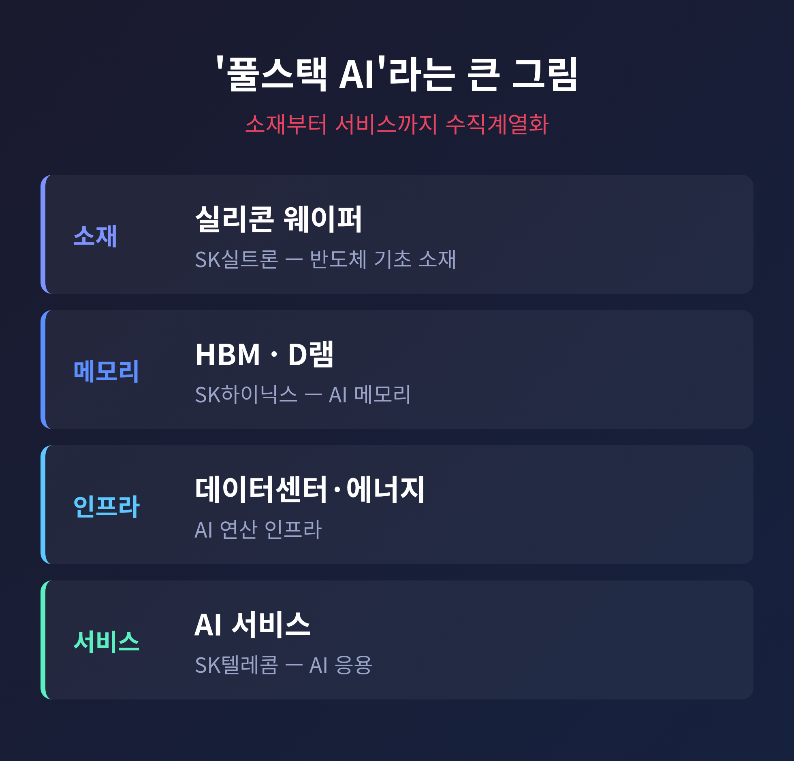

이번 글에서는 2026년 7월 재계의 뜨거운 관심사인 SK실트론 매각 협상을 정리해 보겠습니다. 반도체용 실리콘 웨이퍼를 만드는 SK실트론을 두고, SK그룹과 두산그룹이 반년 넘게 줄다리기를 이어가고 있습니다. 매각을 강행할지, 아니면 되돌릴지. 그 결정이 왜 이토록 어려워졌는지 짚어보겠습니다.

핵심부터 말씀드립니다. SK그룹이 팔기로 했던 SK실트론을, 다시 손에 쥐고 있을지 고심하고 있습니다.
SK㈜는 2025년 12월 17일 두산㈜를 우선협상대상자로 선정했습니다. 매각 대상은 SK실트론 지분 70.6%입니다. 여기까지는 순조로웠습니다.
그런데 해가 바뀌고 7개월이 흘렀는데도 본계약은 맺어지지 않았습니다. 우선협상대상자 선정 이후 협상만 이어지는 상황입니다. SK와 두산 모두 "결렬된 것은 아니다"라고 선을 긋고 있습니다만, 통상 6개월인 우선협상 기한이 7월 말 만료되는 만큼 이달이 분수령이라는 관측이 나옵니다.
거래가 미뤄진 이유는 단순한 가격 흥정이 아닙니다. 그사이 반도체 시장 자체가 완전히 달라졌기 때문입니다.

SK실트론을 이해하려면 웨이퍼가 무엇인지 먼저 알아야 합니다.
웨이퍼는 고순도 실리콘으로 만든 얇은 원판입니다. 그 위에 회로를 촘촘히 새기는 여러 공정을 거쳐야 비로소 D램과 낸드 같은 반도체 칩이 완성됩니다. 반도체 산업의 가장 밑단, 출발점에 있는 소재인 셈입니다.
SK실트론은 이 실리콘 웨이퍼를 만드는 국내 유일의 전문기업입니다. 특히 첨단 반도체에 주로 쓰이는 300㎜(12인치) 웨이퍼 시장에서 글로벌 3위권으로 꼽힙니다. 1위와 2위는 일본의 신에쓰와 섬코입니다.
칩을 아무리 잘 설계해도, 그것을 새길 원판이 없으면 만들 수 없습니다. 웨이퍼가 병목이 되면 반도체 전체가 멈춥니다. SK실트론의 무게는 여기서 나옵니다.

우선협상대상자를 정하던 2025년 말만 해도 SK실트론의 거래 규모는 5조원 안팎으로 거론됐습니다. 당초 기업가치 추정은 4조~5조원 수준이었습니다.
지금은 분위기가 다릅니다. 최근에는 7조원대까지 몸값이 오르내립니다.
다만 이 수치는 확정된 인수가가 아닙니다. 시장에서 "거론"되는 추정치일 뿐입니다. 기업가치 재평가와 거래 구조 조율이 겹치면서 최종 계약이 미뤄지고 있고, 적정 가격을 놓고 양측의 시각차가 좁혀지지 않는 것으로 전해집니다.
값이 뛴 배경에는 웨이퍼 품귀 전망이 있습니다. 세계 시장의 절반 이상을 쥔 섬코와 신에쓰조차 2026년까지 12인치 웨이퍼 공급 부족이 이어질 것이라고 내다봤습니다. 신에쓰는 "모든 설비를 동원해 만들고 있지만, 원자재 값 상승과 생산 장비 부족으로 수요를 완전히 채우지 못한다"고 밝혔습니다. 공장을 새로 짓는 데 시간이 걸리니, 수요가 뛰어도 공급이 곧바로 따라가지 못합니다.

거래를 흔든 진짜 변수는 인공지능입니다.
AI 투자가 늘면서 메모리 수요가 폭발했습니다. SK하이닉스는 2026년 1분기에 매출 52조5763억원, 영업이익 37조6103억원으로 분기 사상 최대 실적을 냈습니다. HBM뿐 아니라 D램과 낸드까지 강세가 번진 결과입니다.
수요가 늘면 생산을 늘려야 합니다. SK하이닉스는 앞으로 5년간 웨이퍼 투입 기준 생산능력을 지금의 2배로 키우겠다고 했습니다. 생산이 두 배가 되면, 그만큼 웨이퍼도 더 필요합니다.
최태원 SK그룹 회장의 발언도 무게를 더합니다. 그는 2026년 3월 엔비디아 GTC에서 "AI와 HBM 수요 증가로 웨이퍼 부족이 2030년까지 이어질 수 있고, 공급 부족 규모가 20%를 넘을 수 있다"고 경고했습니다. 7월 15일 대한상공회의소 제주포럼에서는 "내년 반도체 수요가 올해보다 60~100% 늘어날 수 있다"고 전망했습니다.
예전엔 SK실트론이 재무구조 개선을 위해 정리할 자산이었습니다. 지금은 없어서는 안 될 전략 자산으로 다시 보이기 시작한 것입니다.
SK 내부의 고민은 두 갈래로 갈립니다.
한쪽은 '부채 감축'입니다. SK㈜는 사업 재편, 이른바 리밸런싱의 일환으로 재무구조 개선을 이어왔습니다. 지주사 SK는 7조원대 순차입금을 안고 있고, 실트론을 대신할 만한 대형 매각 카드가 마땅치 않습니다. 그러니 계획대로 팔아야 한다는 지적이 나옵니다.
다른 한쪽은 '공급망 사수'입니다. 웨이퍼 부족이 현실이 되면서 소재 내재화의 필요성이 커졌습니다. SK㈜ 이사회 안에서도 신중론이 우세하다고 전해집니다. 반도체 핵심 공급망을 지켜야 한다는 '전략자산론'이 부상한 것입니다.
여기에 최 회장 개인의 사정도 얽혀 있습니다. 대법원의 이혼 소송 파기환송으로 조 단위 현금 압박이 다소 풀린 점이 매각 동력을 떨어뜨렸다는 평가가 있습니다.
물론 반론도 있습니다. SK실트론을 팔아도 SK의 공급망이 곧바로 약해진다고 보기는 어렵다는 시각입니다. SK하이닉스는 여러 글로벌 업체에서 웨이퍼를 조달하고, SK실트론 역시 다양한 고객사를 두고 있기 때문입니다. 한쪽으로 단정하기에는 아직 이릅니다.

이 결정은 SK의 더 큰 그림과 맞닿아 있습니다.
최 회장이 강조하는 것은 '풀스택 AI', 즉 수직계열화 전략입니다. SK는 SK하이닉스의 HBM 같은 AI 메모리를 축으로, AI 데이터센터와 에너지 인프라, SK텔레콤의 AI 서비스까지 사업을 넓히고 있습니다.
여기에 SK실트론을 더하면 그림이 완성됩니다. 웨이퍼라는 기초 소재부터 메모리, 인프라, 서비스까지. 반도체의 처음과 끝을 한 그룹이 아우르는 구조가 됩니다. 매각을 되돌리려는 기류의 밑바탕에는 이 퍼즐을 완성하려는 계산이 깔려 있습니다.
참고로 SK의 리밸런싱은 2024년 시작돼 지금 3년차입니다. 그동안 SK스페셜티, SK바이오팜 지분 등 13조원 규모의 자산을 정리했고, 2025년 말 차입금을 전년보다 11조7000억원 줄여 102조원으로 낮췄습니다. 재무 성과는 이미 상당히 나온 상태입니다. 그만큼 실트론 매각을 서둘러야 할 압박은 예전보다 줄었다고도 볼 수 있습니다.

정리하면 이렇습니다.
SK실트론 매각은 단순한 계열사 정리를 넘어, AI 시대에 웨이퍼라는 자산을 어떻게 볼 것인가라는 질문으로 커졌습니다. 재무 논리는 "팔라"고 하고, 산업 논리는 "쥐고 있으라"고 합니다.
2026년 7월 23일 현재, 결론은 아직 나지 않았습니다. 우선협상 기한이 끝나는 이달 말, SK가 어느 쪽 손을 들지 시장이 지켜보고 있습니다.
— 남는 질문은 하나입니다. "지금의 7조원은 비싼 값일까, 아니면 몇 년 뒤 돌아보면 싼 값일까."
그 답을 SK가 며칠 안에 내놓아야 합니다.